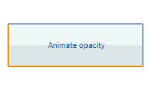
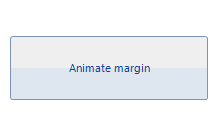
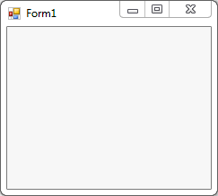

Animations
Using the Telerik Presentation Framework you
can animate almost any element property. To do this you should use the AnimatedPropertySetting class.
The class constructors takes five arguments:
The first argument of the AnimatedPropertySetting is the RadProperty to animate
The second one is the start value
Next is the end value
The forth argument takes the number of frames
And the last argument is the time interwal between frames in miliseconds
Animate opacity
The following example animates the Opacity property of the RadButton's fill primitive,
changing it from 1 to 0 (full transparent) and vice versa:

[C#] Animate button's Opacity property
private void btnAnimateOpacity_Click(object sender, EventArgs e)
{
if (btnAnimateOpacity.ButtonElement.ButtonFillElement.Opacity == 0)
{
AnimatedPropertySetting setting = new AnimatedPropertySetting(FillPrimitive.OpacityProperty, 0.0, 1.0, 20, 20);
setting.ApplyValue(btnAnimateOpacity.ButtonElement.ButtonFillElement);
}
else
{
AnimatedPropertySetting setting = new AnimatedPropertySetting(FillPrimitive.OpacityProperty, 1.0, 0.0, 20, 20);
setting.ApplyValue(btnAnimateOpacity.ButtonElement.ButtonFillElement);
}
}
[VB.NET] Animate button's Opacity property
Private Sub btnAnimateOpacity_Click(sender As System.Object, e As System.EventArgs) Handles btnAnimateOpacity.Click
If btnAnimateOpacity.ButtonElement.ButtonFillElement.Opacity = 0 Then
Dim setting As New AnimatedPropertySetting(FillPrimitive.OpacityProperty, 0.0, 1.0, 20, 20)
setting.ApplyValue(btnAnimateOpacity.ButtonElement.ButtonFillElement)
Else
Dim setting As New AnimatedPropertySetting(FillPrimitive.OpacityProperty, 1.0, 0.0, 20, 20)
setting.ApplyValue(btnAnimateOpacity.ButtonElement.ButtonFillElement)
End If
End Sub
Animate margin
Here is how to animate the Margin property of the RadButton's fill primitive:

[C#] Animate button's Margin property
private void btnAnimateMargin_Click(object sender, EventArgs e)
{
AnimatedPropertySetting setting2 = new AnimatedPropertySetting();
setting2.Property = RadElement.MarginProperty;
setting2.StartValue = new Padding(0);
setting2.EndValue = new Padding(10);
setting2.NumFrames = 14;
setting2.Interval = 30;
setting2.ApplyValue(btnAnimateMargin.ButtonElement);
}
[VB.NET] Animate button's Margin property
Private Sub btnAnimateMargin_Click(sender As System.Object, e As System.EventArgs) Handles btnAnimateMargin.Click
Dim setting2 As New AnimatedPropertySetting()
setting2.Property = RadElement.MarginProperty
setting2.StartValue = New Windows.Forms.Padding(0)
setting2.EndValue = New Windows.Forms.Padding(10)
setting2.NumFrames = 14
setting2.Interval = 30
setting2.ApplyValue(btnAnimateMargin.ButtonElement)
End Sub
Animate bounds
You can also animate the Bounds property of a control. Here is how to create a fly-out animation with RadPanel:

[C#] Animate button's Bounds property
private void radButton1_Click(object sender, EventArgs e)
{
RadPanel panel = new RadPanel();
panel.BackColor = Color.Yellow;
panel.AutoSize = true;
panel.RootElement.StretchVertically = true;
panel.RootElement.StretchHorizontally = true;
panel.Location = new Point(10, 10);
panel.Size = new Size(200, 1);
panel.Text = "I am RadPanel";
this.Controls.Add(panel);
AnimatedPropertySetting setting = new AnimatedPropertySetting();
setting.Property = RadElement.BoundsProperty;
setting.StartValue = new Rectangle(0, 0, 200, 1);
setting.EndValue = new Rectangle(0, 0, 200, 100);
setting.Interval = 30;
setting.NumFrames = 10;
setting.ApplyValue(panel.RootElement);
}
[VB.NET] Animate button's Bounds property
Private Sub RadButton1_Click(sender As System.Object, e As System.EventArgs) Handles RadButton1.Click
Dim panel As New RadPanel()
panel.BackColor = Color.Yellow
panel.AutoSize = True
panel.RootElement.StretchVertically = True
panel.RootElement.StretchHorizontally = True
panel.Location = New Point(10, 10)
panel.Size = New Size(200, 1)
panel.Text = "I am RadPanel"
Me.Controls.Add(panel)
Dim setting As New AnimatedPropertySetting()
setting.[Property] = RadElement.BoundsProperty
setting.StartValue = New Rectangle(0, 0, 200, 1)
setting.EndValue = New Rectangle(0, 0, 200, 100)
setting.Interval = 30
setting.NumFrames = 10
setting.ApplyValue(panel.RootElement)
End Sub